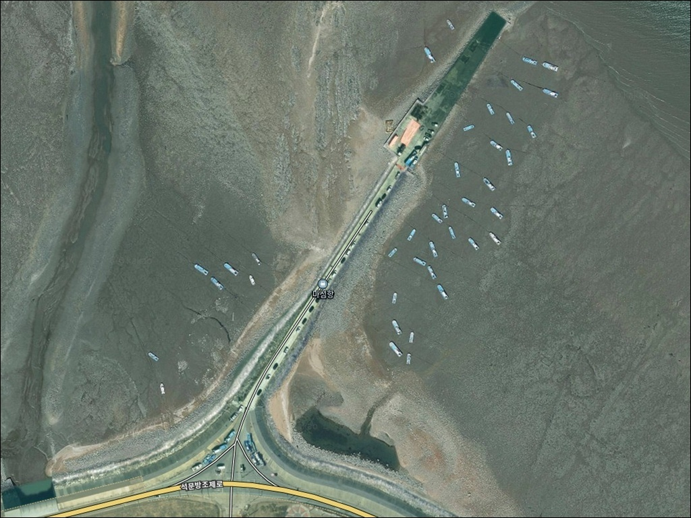
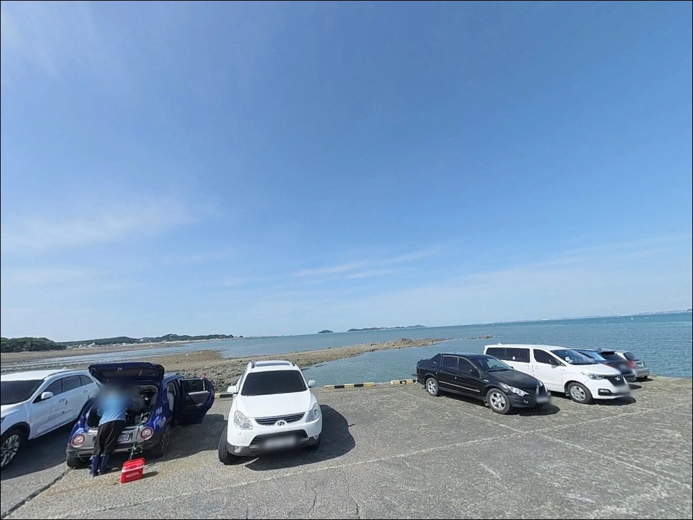
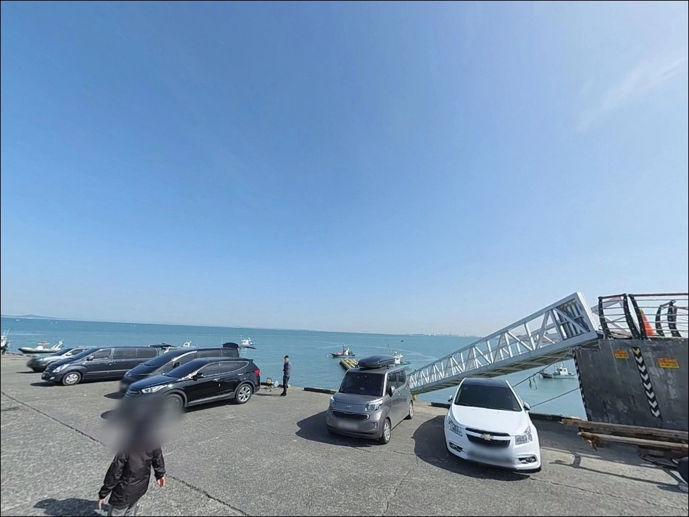
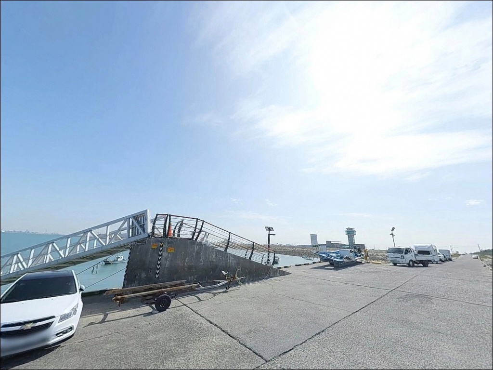
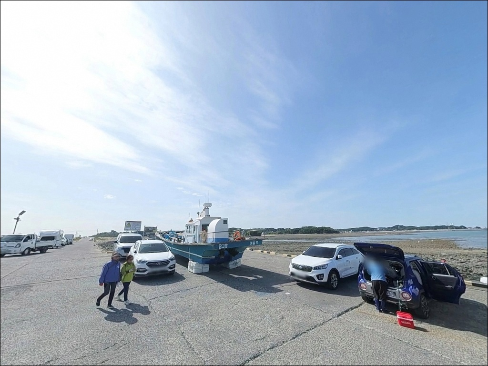
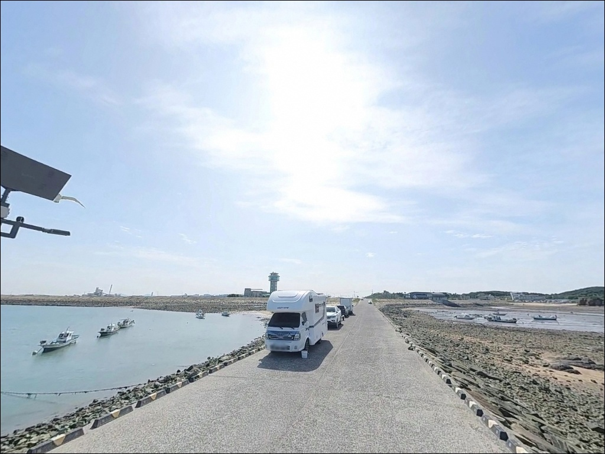
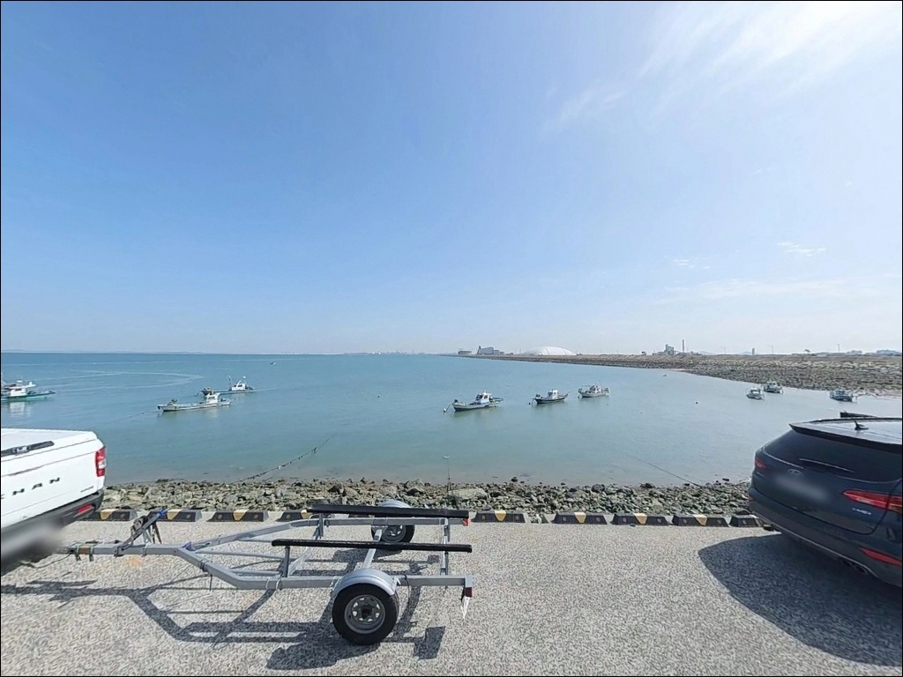
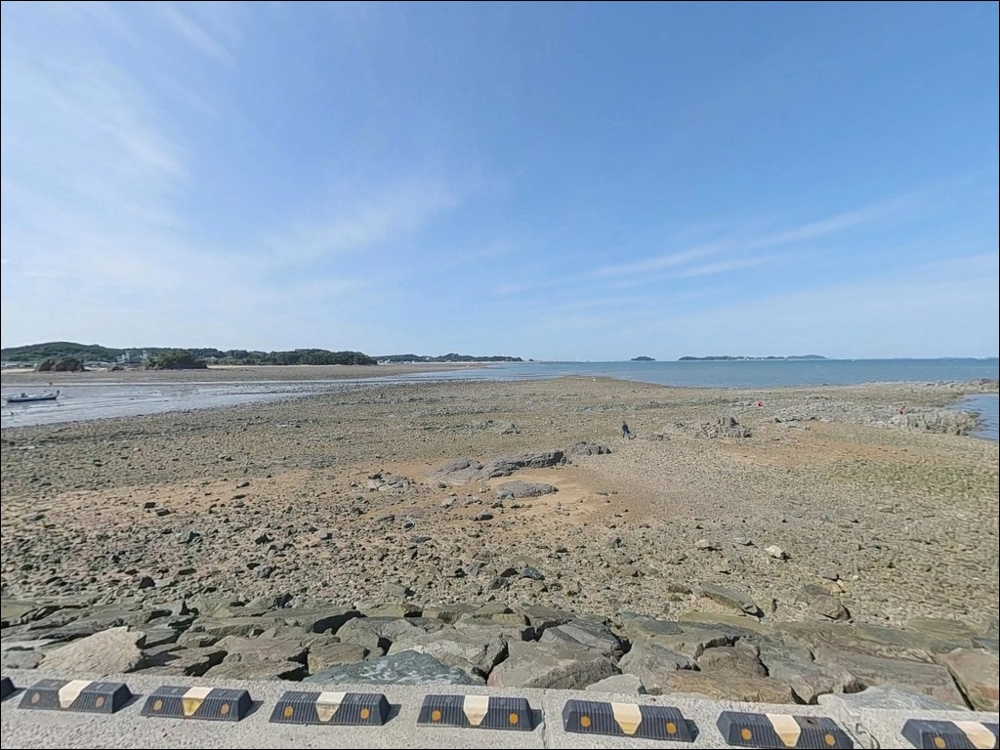
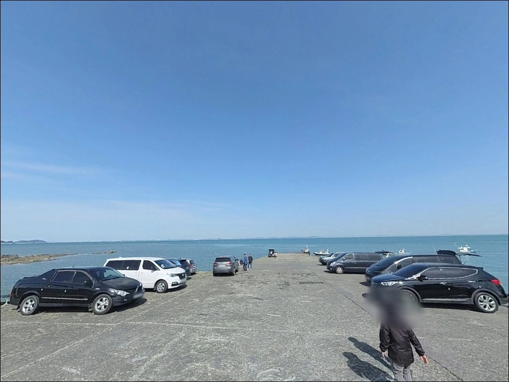

마섬항, 충남 당진시 자연의 여백을 느낄 수 있는 차박, 낚시 명소
이 페이지에는 광고(제휴 링크 포함)가 있으며, 광고 링크를 통해 구매하면 운영자가 판매 수익 또는 수수료를 받을 수 있습니다. 포인트 사진: 카카오맵 스카이뷰·로드뷰. 이 페이지의 지도·사진 이미지는 카카오맵의 실제 서비스 이미지와 다를 수 있습니다.


포인트 안내
마섬항
충남 당진시 석문면 장고항리 1128
간조 시간에 맞춰 마섬항에 도착하면
포구 앞쪽으로 넓은 갯벌만 펼쳐집니다.
수심이 빠져나간 자리에서는
어떤 채비도 제 역할을 하기 어려운
전형적인 서해 내만 구조입니다.
석문방조제 끝자락에 위치한 마섬항은
방파제와 선착장이 갖춰진 소규모 어촌정주어항입니다.
원투낚시와 야간 붕장어 낚시가
이 포인트 지형과 잘 맞는 방식이며,
썰물 때 드러나는 갯벌을 활용한 해루질로도
잘 알려진 곳입니다.
이 글은 마섬항의 진입 환경, 물때 판단 기준,
낚시 방식별 공략 조건, 차박 여건에 집중합니다.
조황 단정이나 특정 어종 보장은
이 글의 범위에 포함되지 않습니다.

1. 포인트 위치와 진입 동선
마섬항은 석문방조제를 따라 장고항 방면으로 진행하다 보면
끝자락에서 자연스럽게 만나게 되는 포구입니다.
방조제 도로에서 포구까지 직접 진입하는 구조라
차량 접근성은 양호한 편입니다.
진입로 폭은 교행에 큰 무리가 없는 수준으로 보이며,
승용차와 중형 SUV 기준으로
별도의 우회 없이 포구 안쪽까지 접근이 가능합니다.
포구 내부는 소형 어선이 정박하는 선착장 구조로,
회차 공간도 어느 정도 확보된 것으로 보입니다.
주차는 방파제 진입부 초입과 포구 주변 도로변을
이용하는 패턴이 일반적인 편이며,
당진관광정보센터가 인근에 위치해 있어
주말·성수기에는 주차 공간 경쟁이 생길 수 있는
구조입니다.
석문방조제 라인 전체가 이어져 있어
방조제 위 도로 가장자리를 따라
차량이 길게 늘어서는 모습이
주말에 흔하게 나타나는 편이라,
이른 시간대에 도착하는 것이
자리 확보에 유리합니다.

2. 차박 환경과 야간 체류 여건
마섬항은 포구 주변으로 식당가와 횟집이 형성되어 있어
완전한 노지 분위기와는 거리가 있습니다.
가로등이나 상가 조명이 어느 정도 있는 환경으로 보이며,
낚시와 해루질 목적의 야간 출조 차량이
물때에 따라 몰리는 편입니다.
성수기 주말 기준으로는 프라이버시가 낮은 편이라,
조용한 차박을 원한다면 평일을 고려하는 것이 현실적입니다.
선착장 끝단 쪽은 상가 조명 범위에서 벗어나는 경우가 있어
개인 조명 장비는 야간에 반드시 챙겨야 합니다.
차박 목적의 주차·체류가 공식적으로 허용된 구역인지는
자료상 확인되지 않으므로,
현장 안내판을 먼저 확인하는 것이 안전한 접근입니다.


3. 주변 편의시설 및 인프라 현황
마섬항은 서해 포구 중에서 편의 여건이 나쁘지 않은 편입니다.
포구 진입로 주변에 공중화장실이 위치하고 있으며,
간자미 전문 횟집을 포함한 식당가가
포구 주변에 밀집해 있습니다.
당진 9미 중 하나인 간자미는
이 포구를 대표하는 수산물로,
해산물 직판장도 운영되고 있습니다.
반경 3km 이내에는 장고항이 있어
수산물 유통센터와 상업 시설을 활용할 수 있습니다.
다만 마섬항 포구 자체 인근에서
편의점이나 마트를 기대하기는 어려운 편이므로,
출발 전 석문면 소재지에서 필요한 물품을
미리 준비해 두는 것이 좋습니다.

4. 방문 전 반드시 챙겨야 할 준비사항
마섬항 방문 전에 가장 먼저 확인할 것은 물때입니다.
서해 조수간만의 차는 이곳에서 특히 크게 작용하는 편이라,
간조 시에는 갯벌이 넓게 드러나
방파제 주변 수심이 급격히 낮아집니다.
바다타임에서 당진·장고항리 기준 물때를 확인하고
중들물 이후 만조 전후를 노려
출발 시각을 잡는 것이 기본 전략입니다.
야간 낚시와 해루질을 병행할 경우
밀물이 얼마나 깊이 들어오는지를
반드시 사전에 파악해야 합니다.
한밤중에 조위가 예상보다 높게 올라오는 사례가
간간이 발생하는 지역이므로,
차량 주차 위치도 조위를 감안해 선정하는 것이 안전합니다.
갯벌 진출 시에는 귀환 여유 시간을 충분히 남겨두는
것이 원칙입니다.
기상청 예보는 출발 전날과 당일 아침, 두 번 확인하는 편이 좋습니다.
방파제와 테트라포트는 조류와 이슬로 미끄럽기 쉬운 구조라
미끄럼 방지 기능이 있는 신발과 구명조끼는
야간 출조 시 기본 장비로 챙겨야 합니다.
어선 이동 동선과 어민 작업 공간을 막지 않는 자리 선정도
포구 낚시의 기본 매너입니다.
최신 조황은 출조 전에 반드시 검색해 보시기 바랍니다.

5. 지형 기반 낚시 여건 분석
마섬항의 방파제는 약 350m 규모로 알려진 구조물로,
장고항이나 노적봉 선착장과는 별개로 운영되는 독립된 포인트입니다.
포구 구조는 내항과 외항으로 나뉘는 형태로,
내항은 소형 어선이 정박하는 잔잔한 환경인 반면
외항 방향은 석문방조제와 연결된 조류 흐름이
어느 정도 형성되는 구조로 보입니다.
바닥은 뻘과 모래가 섞인 혼합 지형으로 추정되며,
방파제 끝단과 수로가 형성된 구간에서
수심 변화가 생기는 패턴이 이 포인트의 특징입니다.
간조 시에는 수심이 크게 낮아지지만,
만조 전후에는 방파제 직벽 아래로 수심이 살아나
원투 채비가 제 역할을 할 수 있는 조건이 됩니다.
원투낚시로 접근한다면 방파제 외항 쪽이 내항보다 어울리는 편이며,
방파제 끝단과 수로 경계 구간은
회유성 어종이 지나는 길목 역할을 할 가능성이 있습니다.
지형 특성상 밑걸림 빈도가 높지는 않은 편으로 보이나,
수로 경계 부근에서는 주의하는 것이 좋습니다.
최신 조황은 가기 전에 꼭 검색해 보시기 바랍니다.


6. 마섬항에 어울리는 낚시 스타일
이 포인트 지형과 가장 잘 맞는 방식은 원투낚시입니다.
갯벌형 서해 연안 특성과 수로 구조를 고려하면
생미끼를 달아 바닥을 노리는 원투 쳐박기 스타일이
기본 접근법으로 어울립니다.
기대해 볼 수 있는 어종으로는
붕장어, 우럭, 놀래미, 도다리 계열이
이 지형에서 자주 언급되는 편입니다.
야간 출조라면 붕장어 원투낚시가 특히 어울립니다.
서해 갯벌형 포구에서 야간에 붕장어 활성도가 높아지는 경향이 있고,
마섬항 역시 야간 원투 출조로 알려진 곳입니다.
조류가 느려지는 정조 타이밍에 맞춰 채비를 멀리 던지고
바닥을 천천히 탐색하는 방식이 유효합니다.
루어낚시도 시도해 볼 수 있습니다.
여름철 저녁부터 새벽 사이에는 농어 활성이 올라오는 경향이 있으며,
방파제 외항 방향에서 워킹 스타일로 공략하는 방식이
이 지형 구조와 어울리는 편입니다.
가을철에는 갈치 새끼인 풀치가 연안으로 붙는 시기도 있어
가벼운 채비 운용이 가능한 편입니다.
썰물 시간대를 활용한 해루질도 이 포인트의 활용 방식 중 하나입니다.
단, 갯골에 고립되는 사고가 발생할 수 있어
밤 해루질은 반드시 동행자와 함께 하는 것이 원칙입니다.

7. 대안 포인트와 플랜 B 동선
마섬항 조류가 너무 세거나
주차 공간이 이미 가득 찬 상황이라면
장고항이 첫 번째 대안입니다.
마섬항에서 2~3km 거리에 위치한 국가어항으로,
방파제 330m, 선착장 237m 규모의
체계적인 인프라를 갖추고 있습니다.
방파제 낚시, 좌대낚시, 선상낚시까지 다양한 스타일로
대응이 가능한 포인트입니다.
석문방조제 본체도 빠뜨릴 수 없는 대안입니다.
마섬항과 방조제가 바로 연결된 구조라
포인트 이동 없이 방조제 라인을 따라
상황에 맞는 자리를 찾아볼 수 있습니다.
방조제 원투낚시로 알려진 구간이 있어
마섬항이 기대 이하일 때 즉시 이동 가능한
연계 포인트입니다.
당진 석문 권역에서 조금 더 범위를 넓히면
용무치항도 고려해 볼 수 있습니다.
해루질과 낚시 목적으로 석문 라인에서 함께 언급되는 포인트로,
마섬항과 다른 방향의 지형과 조류를 경험해 볼 수 있는 곳입니다.

물때를 알면 마섬항이
다르게 보입니다
원투낚시나 야간 붕장어 낚시를 즐기는 낚시인이라면
마섬항의 갯벌형 지형 구조는
잘 맞는 환경입니다.
방파제와 선착장이 함께 있고,
포구 주변에 식당가와 화장실이 갖춰져 있어
당일 출조로도 부담이 적은 편입니다.
다만 물때를 확인하지 않고 간조 시간에 도착하면
채비를 펼칠 자리 자체가 사라지는 경험을 하게 됩니다.
물때 확인, 조위 기준 주차 위치 선정, 개인 조명 준비,
이 세 가지가 마섬항 출조 성패를 나누는 기준입니다.
낚시를 마치고 포구 옆 간자미 횟집에서
회 한 접시 올려두고 하룻밤 머무는 차박 여행자라면,
서해 낚시와 차박을 가장 가까운 거리에서
경험할 수 있는 포인트 중 하나가 될 수 있는 곳입니다.